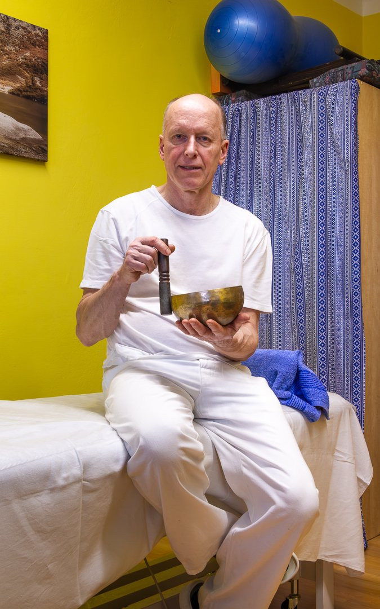

Praktické rady, které mi pomohly i mým klientům za 40 let praxe. Sepsané podle mého názoru a zkušeností — nejsou náhradou lékařské péče, ale doplňují ji.

„Potraviny budiž Vašimi léky. Pokud nejsi v otázce vlastního zdraví připraven změnit svůj život, není ti pomoci k nápravě zdraví."